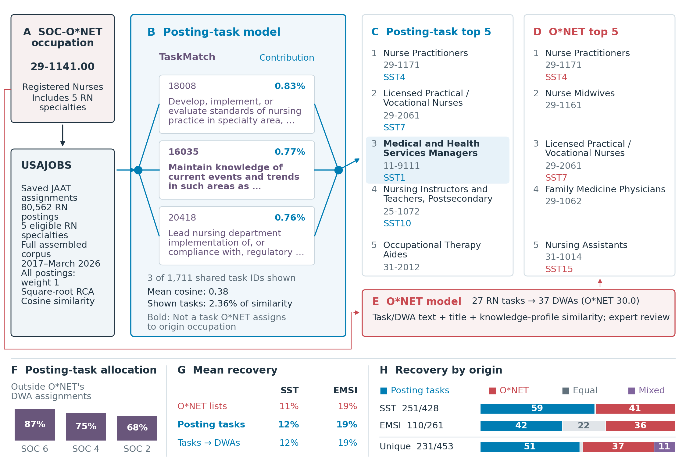

USAJOBS: profiles, relatedness and validation
Build occupation-task profiles from public JAAT-coded postings, calculate relatedness, and compare recommendations with observed occupational transitions.
Demo notebooks on GitHub · Download notebooks, code and aggregate inputs · Run instructions

Figure PDF · SVG · All six benchmark results (CSV) · Benchmark coverage (CSV)

Benchmark results
| Benchmark | Origins | Posting tasks: mean recovery | O*NET: mean recovery | Posting tasks higher | Equal | O*NET higher |
|---|---|---|---|---|---|---|
| SST | 428 | 12.40% | 11.38% | 58.6% | 0.5% | 40.9% |
| EMSI | 261 | 19.18% | 18.85% | 42.1% | 22.2% | 35.6% |
| CPS + SIPP | 85 | 15.29% | 17.48% | 41.2% | 3.5% | 55.3% |
| NLSY97 + PSID, 3 years | 58 | 9.36% | 10.63% | 44.8% | 8.6% | 46.6% |
| NLSY97 + PSID, 5 years | 56 | 8.75% | 8.94% | 44.6% | 7.1% | 48.2% |
| NLSY97 + PSID, 10 years | 48 | 7.29% | 7.16% | 50.0% | 6.2% | 43.8% |
Each origin has the same recommendation-list length for both models, capped at twenty. Mean recovery gives origins equal weight; higher/equal/lower shares include all evaluated origins. The figure displays SST and EMSI; the table reports all six comparisons. Different benchmarks cover different, overlapping occupational populations.
Construction and interpretation
The assembled corpus contains 3,089,366 distinct posting IDs. USAJOBS observations have unit weights; links require at least five postings. RCA uses retained links, followed by square-root weighting and unit-length normalization. The same pair-level exclusions used in the NLx analysis are applied before recalculating RCA; unreviewed links remain. Evaluation uses 614 eligible specialties with at least 200 postings, intersected with the paper's comparison universe; benchmark groups and original outcome denominators are documented in Notebook 3.
Mean recovery is higher for posting tasks in SST, EMSI and the ten-year NLSY97 + PSID comparison; O*NET has higher mean recovery in the other three comparisons. A higher share of origins does not imply higher mean recovery. Federal postings and their coverage differ from NLx. The public USAJOBS inputs support reproduction without releasing confidential NLx occupation-task profiles.
Panel G compares posting tasks, posting tasks grouped into DWAs, and O*NET’s published lists. Random groupings are an additional sensitivity analysis, not a series in the figure. Download all six comparison results · Results for every grouping. Panel H compares the original task model with O*NET’s published lists.
Code
- JAAT-coded records → occupation-task profiles
- Profiles → relatedness scores
- Scores → pipeline and validation figure
The notebooks begin with saved JAAT codes, not raw-text extraction. Notebook 1 retrieves public coded records and metadata; Notebooks 2–3 can use the included aggregate inputs. The complete package includes dependencies and the plotting module.